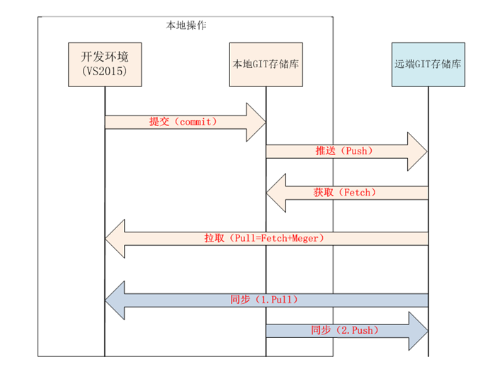

http://www.csdn.net/article/2012-03-29/313675
http://www.cnblogs.com/zhangran/archive/2012/08/26/2657864.html
http://www.cnblogs.com/fzrain/p/3812364.html
http://www.jb51.net/article/116982.htm
http://blog.csdn.net/gentle_wolf/article/details/14004345

二.看一下下面两条语句，是不是觉得Model和model都是数据的载体？现在给你解释一下。
@foreach(var item in Model)
@Html.EditorFor(model => model.Name)
第一段代码应该不用解释了吧，很明显都是Model就是数据的载体
第二段代码中model => model.Name它是一段Lambda表达式，如果翻译成正常的语句应该是这样的
string 函数名(Model类型 model)
{
return model.Name
}
所以model只是一个参数名称
@Html.EditorFor(model => model.Name)
等效于
@Html.EditorFor(m=> m.Name)
这个参数名称是可以随意变的
http://blog.csdn.net/yejinwei1220/article/details/45391543 学习ASP .NET MVC5官方教程